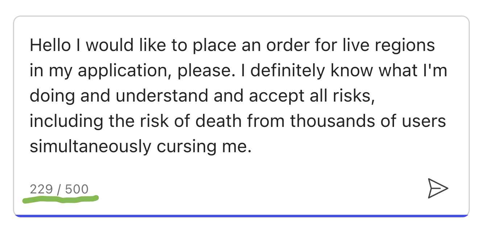
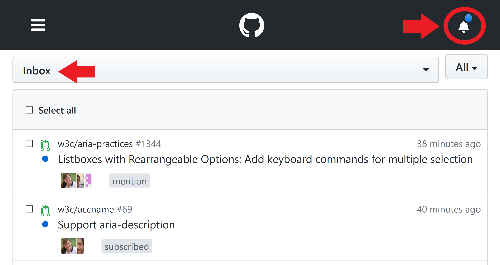

May I interest you in a notification?
Do you sometimes wish you could yell specifically at people using a screen reader?
Let me interest you in.... LIVE REGIONS!
Side effects may include:
[icon: swearing]
[icon: leaving]
[icon: spontaneous combustion]
[icon: hatred]
Not intended for:
[icon: children]
[icon: elderly]
[icon: heart]
[icon: stress]
[icon: anxiety]
[icon: peace]
< pause for tomatoes >
What is a notification?
Hi! It me!
What is a live region?
Is it a notification?
[speech icon] Hi! It me!
aria-live="assertive"aria-live="polite"role="alert"role="status"
role="alert" insertion
(video of experience here)
(video embed of bad experience)
(video embed of good experience)
But how do I apply live regions here? Help!
(image of snake oil bottle)
Don't worry! Dr. ARIA's patented live regions can fix every ailment!
(just apply debouncing based on typing!)
It also works here!


WARNING: Please consult a doctor for any of the following:
More than one simultaneous loading region

Using a live region to communicate what a focus change already did.
Wrapping any type of input in a live region
Wrapping any major section of changing content in a live region
(image of chat pane)
Side effects include:
- Headaches, nausea, dizzyness...
- No control over timing and frequency of updates
- No control over visual vs. announced verbosity
- No ability to filter out repetitive & supplementary content
- Too many announcements that are too verbose
Chatbots: a shallow dive
(image of incoming chat loading)
Field testing snake oil live regions
(image of snake oil)
Batch loading announcements
(video of chat with loading incoming, but live regions every 5s)
Be intentional about message text
Do NOT wrap streaming content in a live region
(image of baby heroin snake oil)
It can be good!
(get a well-formated user quote here)
Any sufficiently complex application should have central live region handling
- Handle batching back-to-back loading/loaded announcements
- Only need one live region node in the page
- Allows components to fire a live region on insertion
- Better testing and debugging
Notification center

ariaNotify
ariaNotify('Help my web page is yelling at me');
Remember:
ariaNotify('do not SCREAM at your users');
Only scream at developers
(who abuse live regions)